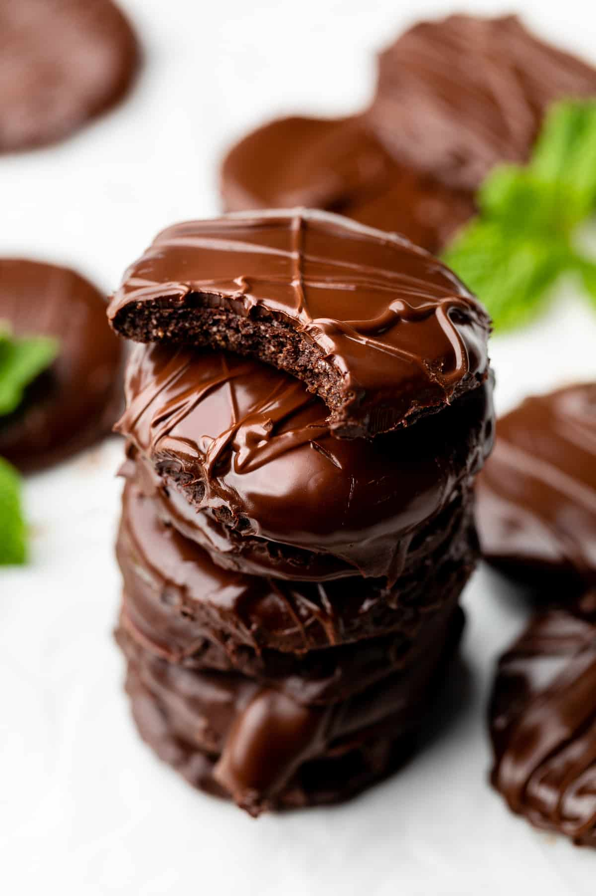

Ingredients
- 1 3/4 cups almond flour
- 1/3 cup cocoa powder
- 1/2 tsp salt
- 1/4 cup coconut oil
- 1/4 cup maple syrup
- 1/2 tsp peppermint extract
Coating
- 1.5 cups dark chocolate chips
- 1 tbsp melted coconut oil
- 1/2 tsp peppermint extract
Directions
- Preheat oven to 350F and line baking sheet with parchment paper.
- In a large bowl, mix together almond flour, cocoa powder, and salt.
- Add in coconut oil, maple syrup and peppermint extract. Mix until well combined.
- Chill dough in fridge for 30 minutes.
- Roll dough out between two sheets of parchment or wax paper until 1/4 inch thick.
- Use a mason jar lid, shot glass, or linzer cookie cutter to cut circles. Place on parchment lined baking sheet.
- Continue process until all dough has been used.
- Bake cookies for 12 minutes. Let cool completely.
- While cooling, melt chocolate chips with coconut oil in 30 second increments in the microwave. Once completely melted, add in peppermint extract.
- Lay cookies on a cooling rack and place on top of baking sheet. Pour chocolate over all cookies. Alternatively, dip each cookie in chocolate on both sides. I prefer the pouring over method for ease!
- Let cookies cool either on counter or in fridge.